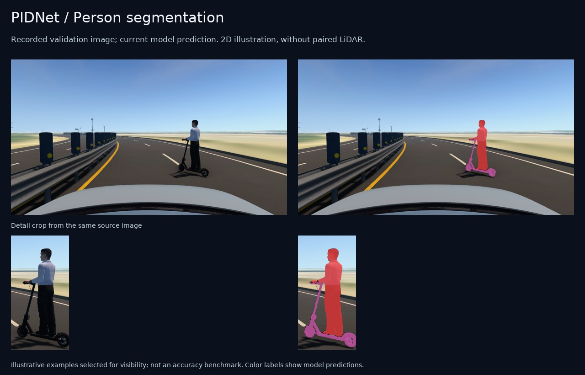
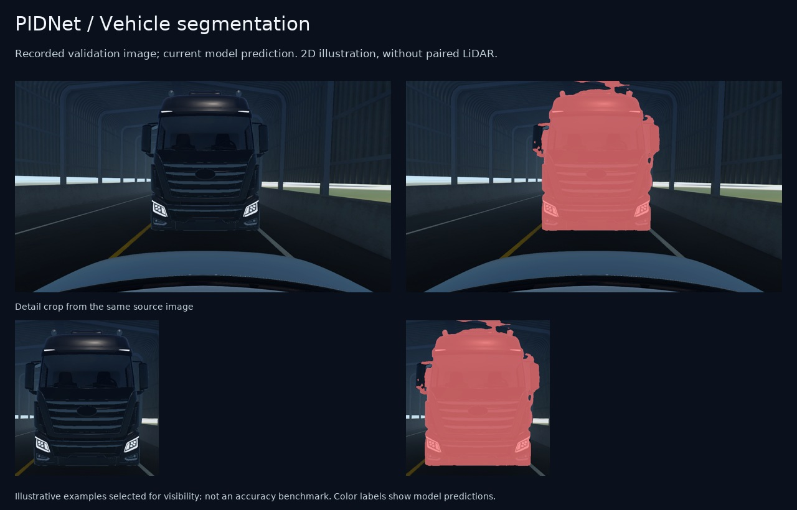
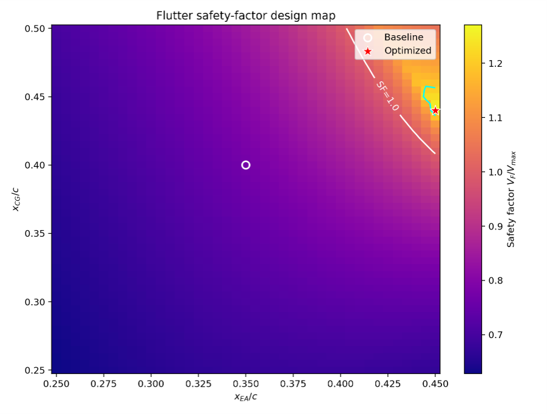
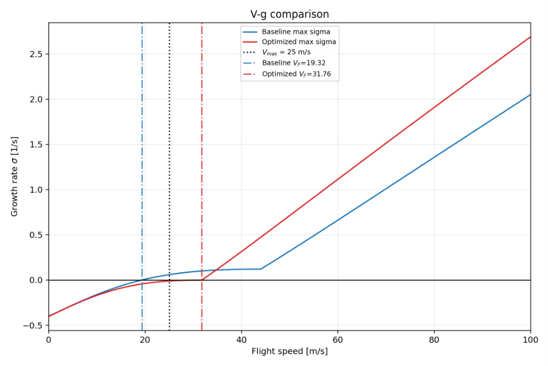
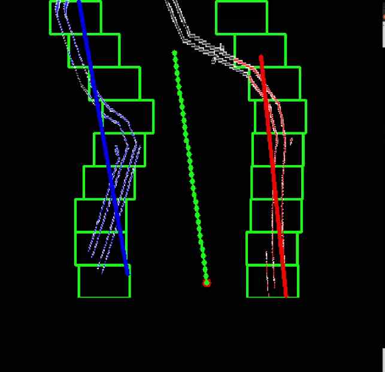
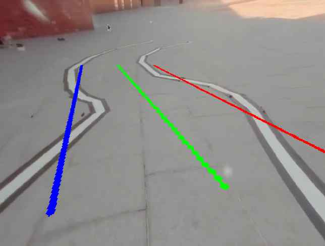

Mar 2023 – Aug 2027 (expected)
Hongik University
B.S. in Mechanical System Design Engineering · Seoul, South Korea
GPA 3.88 / 4.5
Mechanical engineering,
autonomous driving & embedded control.
Mar 2023 – Aug 2027 (expected)
B.S. in Mechanical System Design Engineering · Seoul, South Korea
GPA 3.88 / 4.5
Mar – Sep 2025
Exchange student in Mechanical Engineering · Germany
Jul – Oct 2026
RGB identifies what a surface may be; LiDAR supplies its measured 3D position. I integrated PIDNet class probabilities with LiDAR returns through camera projection and PointPainting.
How this demonstration was made. Six seconds from an existing MORAI RGB/LiDAR rosbag were processed offline with the current model. It shows score decoration before the runtime foreground and surface filters. Sensor pairs use their recorded measurement timestamps; maximum camera–LiDAR difference is 61.5 ms across 48 pairs. The grid spacing is 5 m. The video is sampled at 8 sensor pairs/s and encoded at 24 fps with repeated frames, preserving the original playback speed.
The clip uses the development camera calibration without scan motion compensation and shows predictions before runtime surface filtering. Source, processing scope, and verification record.
Separate recorded validation images processed by the same model. These illustrate image segmentation only; they have no paired LiDAR and are not part of the fusion sequence. Examples were selected for visibility, not as an accuracy benchmark.



Jul – Sep 2026
I implemented the vehicle-specific sensor preprocessing, GNSS approval and recovery logic, initialization, and output validity checks around robot_localization's Local and Global EKFs.
This visualization was generated by rebuilding and running Team-Stier/HL-FMA-1-5-2026 at fba9a5c on the original 2026-09-06 sensor recording at 1× speed. The localization source and fusion policies were unchanged. The old encoder message definition was adapted only to include the current gear constants; all recorded values and timestamps were preserved and its serialized data stream was checked for equality. The arrow and displayed direction follow the trajectory for visualization only; recorded EKF yaw, yaw rate, and position data remain unchanged. Direction is held while stationary. The initialization jump is excluded. The orange ellipse is the filter's 95% Gaussian XY covariance contour, not a measured position-error bound.

Executed localization source and configuration · Replay source and visualization verification
Aug 2026

Aug 2026
Apr – Jun 2026

Apr – Jun 2026
The design study varied the center of gravity (CG) and elastic axis (EA) as fractions of the wing chord. The selected configuration shifted the CG from 40% to 44% chord and the EA from 35% to 45% chord.


Jan – Mar 2026
I built the ROS 1/OpenCV vision pipeline: camera distortion correction, Canny edges, inverse perspective mapping, Sliding Window detection, and tracking around the previous lane fit. The detected boundaries produce a center path that is converted into vehicle-frame metres and published as nav_msgs/Path.


The implementation also supports a center-path offset from a single visible boundary, lane-width and left/right checks, temporal smoothing, and re-detection when tracking fails. Vision implementation · Image source record.

2023 – 2026
Hongik University · Six consecutive semesters · ₩14,384,000 total
Oct 2026 – Present
Dec 2025 – Oct 2026
Developed camera- and LiDAR-based perception and obstacle avoidance algorithms.
Jun – Jul 2024
Languages · Python, C/C++
Tools · ROS 1, ROS 2, NX, ANSYS, Fluent, ADAMS
English · NEW TEPS 424